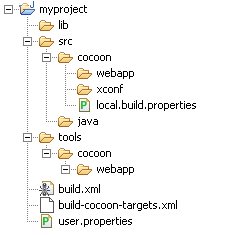

Now that you've studied Cocoon and you are convinced it is worth spending your time on, you want to try your hand at your own project. There are several ways to start your own project. This is just one of them.
The following HOW-TO helps you to create your own project in a subdirectory of the Cocoon root. It also has its own subsitemap. The main advantage of this configuration is the fact that you can leave the original Cocoon root sitemap intact. Since it is set up in a pretty generic way and accommodating most types of generators, transformers and serializers, it provides a working environment that you don't have to understand thoroughly before you are able to use it. Instead, you can work the other way around. Once you understand a part of the root sitemap you can tune it to your needs.
Another advantage of this configuration is the strict separation of the files that are part of
Cocoon and those that are part of your project. The separation allows you to update Cocoon without
overwriting vital modifications. Or you can develop your webapp against different Cocoon
distributions.
Note: This configuration will work with Cocoon 2.1.X distributions and maybe more recent.
It will probably be more difficult to get this working with an older distribution.
The following steps explain how to set up this configuration. These steps will only be performed once. You will work from the commandline.
ant -f build-cocoon-targets.xml -Dcocoon.distro.home=/path/to/your/cocoon/distribution
Note: Either you have ANT_HOME set to the appropriate directory or you use the full path to Ant.
Note: The cocoon.distro.home is now set in user.properties.
Note for Windows users: set the slashes as forward slashes.
ant cocoon:getNote:This will only be done when changing the distribution or the settings in local.build.properties.
ant webappThis builds the Java classes and copies the entire project to the tools tree.
ant cocoon:runThis starts Jetty with Cocoon and your project in it.
http://localhost:8888/You should now see the homepage of Cocoon.
This concludes the initial setup.
If we execute the above steps on a Windows machine with the Cocoon distribution in /SVN/cocoon and your project in /projects/myprojects, the commands and the resulting information on your screen will look like this:
D:\projects>mkdir myproject
D:\projects>copy build-cocoon-targets.xml myproject
1 file(s) copied.
D:\projects>cd myproject
D:\projects\myproject>\apache-ant-1.6.1\bin\ant -f build-cocoon-targets.xml -Dcocoon.distro.home=/SVN/cocoon
Buildfile: build-cocoon-targets.xml
seed-check:
msg-seed-localprops:
seed-dirs:
[mkdir] Created dir: D:\projects\myproject\src\cocoon
[mkdir] Created dir: D:\projects\myproject\src\cocoon\webapp
[mkdir] Created dir: D:\projects\myproject\src\cocoon\xconf
[mkdir] Created dir: D:\projects\myproject\tools\cocoon
[mkdir] Created dir: D:\projects\myproject\tools\cocoon\webapp
[mkdir] Created dir: D:\projects\myproject\src\java
[mkdir] Created dir: D:\projects\myproject\lib
seed-localprops:
msg-seed-cvsignore:
seed-cvsignore:
msg-seed-userprops:
seed-userprops:
msg-seed-build:
seed-build:
[echo] Creating build.xml...
seed:
[echo] Done.
[echo]
[echo] The directory src/cocoon/webapp is created to hold your cocoon
[echo] webapp resources.
[echo] The directory src/cocoon/xconf is created to hold XConfPatch files
[echo] to (optionally) modify the cocoon.xconf log.xconf web.xml and
[echo] (root) sitemap.xmap
[echo]
[echo] From here:
[echo] ---------
[echo] You should now edit the file ./src/cocoon/local.build.properties to select
[echo] only those optional components of Cocoon that your project needs.
[echo] IMPORTANT: Remove the path-entries from that file!
[echo]
[echo] The build.xml can freely be extended for your project needs.
[echo]
[echo] To build a fresh Cocoon base for this project
[echo] (when you updated the distro pointed to by -Dcocoon.distro.home)
[echo] > ant cocoon:get
[echo]
[echo] To blend in your own project resources and classes:
[echo] > ant webapp
[echo]
[echo] To test-run using the Jetty container:
[echo] > ant cocoon:run
[echo]
BUILD SUCCESSFUL
Total time: 1 second
D:\projects\myproject>
|  Figure 1: Directory layout |
In figure 1 you can see the resulting directory layout. We'll discuss what each of these entries contain:
The build.xml contains several useful targets, which we will explain below. Note that this file includes build-cocoon-targets.xml. Some of the targets below are in that file, so don't delete it!
http://localhost:8888/yourProjectName
The build-cocoon-targets.xml file can be found here.
Credits go to Marc Portier for the content and the Ant build script.